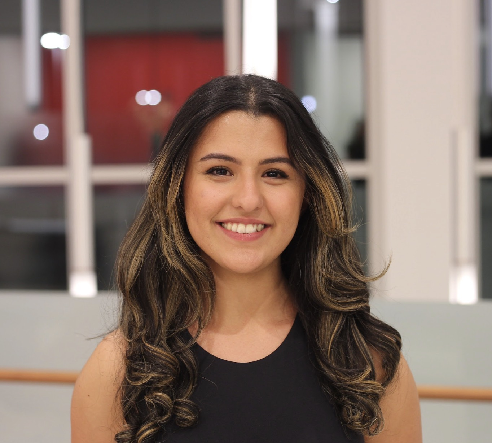

Intern
DC News Now
2023
Production intern for television news station in top 10 market. Coding via AP ENPS system, directing, assistant directing, audio, teleprompter. Writing stories for broadcast script, attending editorial meetings, pitching story ideas and shadowing industry professionals
On Air DJ
WMUC Radio
2021-present
Co-host and co-producer of weekly talk show "Cry Us A River," lighthearted advice show hearing issues from our listeners and playing music.
Anchor/reporter
WMUC Radio
2023-present
Anchor and reporter for weekly WMUC News radio show and biweekly entertainment show Drop The Pop.
Communications Director
WMUC Radio
2022-2023
Oversee social media, graphic design, and community outreach departments. Advise team of 10 to facilitate brand and image of campus radio station.
Promotions Director
WMUC Radio
2021-2023
Editor-in-chief of WMUC blog; copyediting and HTML. Founded and led team of 40+ writers and concert photographers, lead pitch meetings and manage relationships with local concert venues and press contacts.
Broadcast Director
Capital News Service
2023
Organize and direct live news broadcast twice a week, leading a team of production staff. Review and edit scripts and rundowns. Work with producers and reporters under time crunch.
Production Staff
Capital News Service
2022
Assist in production of live news broadcast once a week. Rotated between floor directing, cameras, and graphics on TriCaster.
Community Manager
Terps Esports
2022-present
Oversee outreach, content and social media initiatives and create brand for budding esports organization. Serve as campus esports community liaison. Founded Student Advisory Board, leading team of student UMD eSports personnel to improve the program via feedback from different areas.
Broadcast and Technical Director
Terps Esports
2022
Oversee 3 hr+ live broadcast productions for UMD's eSports teams. Technical directing of audio, video, graphics, and cameras.
Production Intern
Seacrest Studios, Children’s National
2022
Created, produced, and directed age appropriate programming broadcasted to 300+ patients and families. Created original content on weekly assignments practicing video and audio editing. Scheduled and hosted celebrity talent.
B.A. Journalism, University of Maryland, Expected May 2024
- Dean's List: 2021, 2022
- Phi Theta Kappa: 2020
- 3.7 GPA
- Fluent in English and Farsi.
- Coding in AP ENPS and Ross Overdrive. Directing newscasts utilizing these systems.
- Video editing in Adobe Premiere Pro.
- Audio editing in Adobe Audition.
- Technical production using vMix and TriCaster.
- Copyediting for print and broadcast.